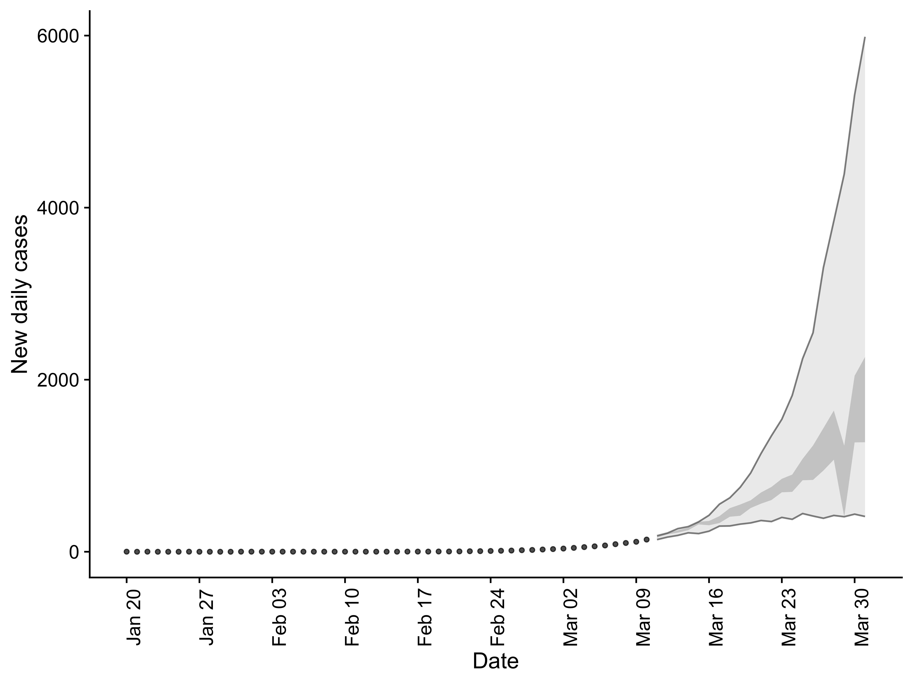

Getting started
introduction.RmdIntroduction
This vignette briefly outlines the functionality of EpiSoon. To get started load the required packages.
- Load the package (
bstsfor models,ggplot2for plotting, andcowplotfor theming)
Forecast Rts, score and plot
- We use an example dataframe built into the package but this could be replaced with your own data.
EpiSoon::example_obs_rts
#> rt date
#> 1 2.490547 2020-03-01
#> 2 2.442588 2020-03-02
#> 3 2.402473 2020-03-03
#> 4 2.335572 2020-03-04
#> 5 2.266551 2020-03-05
#> 6 2.192293 2020-03-06
#> 7 2.146429 2020-03-07
#> 8 2.104371 2020-03-08
#> 9 2.059281 2020-03-09
#> 10 2.027134 2020-03-10
#> 11 2.014678 2020-03-11
#> 12 1.998946 2020-03-12
#> 13 1.968350 2020-03-13
#> 14 1.947376 2020-03-14
#> 15 1.906984 2020-03-15
#> 16 1.812842 2020-03-16
#> 17 1.718532 2020-03-17
#> 18 1.665646 2020-03-18
#> 19 1.639927 2020-03-19
#> 20 1.633795 2020-03-20
#> 21 1.682025 2020-03-21
#> 22 1.561653 2020-03-22- Fit a
bstsmodel and produce a Rt forecast. Any appropriately wrapped model can be used (seebsts_modelandfable_modelfor an examples).
rt_forecast <- forecast_rt(EpiSoon::example_obs_rts[1:10, ],
model = function(...){EpiSoon::bsts_model(model = function(ss, y){bsts::AddAutoAr(ss, y = y, lags = 10)}, ...)},
horizon = 21, samples = 10)
rt_forecast
#> # A tibble: 210 x 4
#> sample date rt horizon
#> <int> <date> <dbl> <int>
#> 1 1 2020-03-11 1.90 1
#> 2 2 2020-03-11 1.99 1
#> 3 3 2020-03-11 2.04 1
#> 4 4 2020-03-11 1.96 1
#> 5 5 2020-03-11 2.00 1
#> 6 6 2020-03-11 1.93 1
#> 7 7 2020-03-11 1.98 1
#> 8 8 2020-03-11 1.90 1
#> 9 9 2020-03-11 1.96 1
#> 10 10 2020-03-11 1.89 1
#> # … with 200 more rows- Score the forecast
rt_scores <- score_forecast(rt_forecast, EpiSoon::example_obs_rts)
rt_scores
#> # A tibble: 12 x 11
#> date horizon dss crps logs bias sharpness calibration median
#> <date> <int> <dbl> <dbl> <dbl> <dbl> <dbl> <dbl> <dbl>
#> 1 2020-03-11 1 -4.48 0.0384 -1.46e+0 -0.8 0.0523 0.0000500 0.103
#> 2 2020-03-12 2 0.487 0.0914 6.28e-4 -1 0.0519 0.0000500 0.248
#> 3 2020-03-13 3 -3.38 0.0642 -9.02e-1 -0.8 0.0365 0.0000500 0.157
#> 4 2020-03-14 4 -3.32 0.0625 -9.86e-1 -0.6 0.0596 0.0000500 0.215
#> 5 2020-03-15 5 -2.85 0.0771 -8.15e-1 -1 0.0627 0.0000500 0.189
#> 6 2020-03-16 6 -3.58 0.0498 -1.21e+0 -0.8 0.0928 0.0000500 0.146
#> 7 2020-03-17 7 -4.63 0.0318 -1.08e+0 -0.200 0.123 0.0000500 0.0649
#> 8 2020-03-18 8 -4.01 0.0309 -1.04e+0 -0.200 0.0988 0.0000500 0.0439
#> 9 2020-03-19 9 -3.99 0.0353 -8.36e-1 0 0.132 0.0000500 0.0343
#> 10 2020-03-20 10 -3.72 0.0518 -6.32e-1 -0.400 0.119 0.0000500 0.119
#> 11 2020-03-21 11 -3.21 0.0744 -4.33e-1 -0.400 0.203 0.0000500 0.231
#> 12 2020-03-22 12 -3.40 0.0586 -4.44e-1 -0.200 0.265 0.0000500 0.111
#> # … with 2 more variables: iqr <dbl>, ci <dbl>- Summarise the forecast scores
summarise_scores(rt_scores)
#> # A tibble: 5 x 8
#> score bottom lower median mean upper top sd
#> <chr> <dbl> <dbl> <dbl> <dbl> <dbl> <dbl> <dbl>
#> 1 bias -1 -0.8 -0.5 -0.533 -0.200 -0.055 0.345
#> 2 crps 0.0311 0.0376 0.0552 0.0555 0.0668 0.0874 0.0195
#> 3 dss -4.59 -4.00 -3.49 -3.34 -3.29 -0.431 1.31
#> 4 logs -1.39 -1.05 -0.869 -0.819 -0.585 -0.119 0.394
#> 5 sharpness 0.0407 0.0578 0.0958 0.108 0.125 0.248 0.0679- Summarise the forecast
summarised_rt_forecast <- summarise_forecast(rt_forecast)
summarised_rt_forecast
#> # A tibble: 21 x 9
#> date horizon median mean sd bottom lower upper top
#> <date> <int> <dbl> <dbl> <dbl> <dbl> <dbl> <dbl> <dbl>
#> 1 2020-03-11 1 1.96 1.95 0.0501 1.89 1.93 2.00 2.04
#> 2 2020-03-12 2 1.88 1.88 0.0475 1.82 1.82 1.88 1.97
#> 3 2020-03-13 3 1.89 1.86 0.0859 1.67 1.87 1.92 1.98
#> 4 2020-03-14 4 1.84 1.83 0.113 1.55 1.80 1.88 1.95
#> 5 2020-03-15 5 1.81 1.78 0.0941 1.60 1.78 1.86 1.89
#> 6 2020-03-16 6 1.74 1.71 0.109 1.48 1.67 1.78 1.83
#> 7 2020-03-17 7 1.69 1.70 0.103 1.52 1.66 1.81 1.84
#> 8 2020-03-18 8 1.64 1.64 0.140 1.34 1.57 1.68 1.83
#> 9 2020-03-19 9 1.62 1.63 0.143 1.36 1.53 1.67 1.83
#> 10 2020-03-20 10 1.57 1.61 0.161 1.34 1.49 1.59 1.85
#> # … with 11 more rows- Plot the forecast against observed data

Forecast cases, score and plot
- Forecasting cases requires the observed cases on which the observed Rt estimates were based
EpiSoon::example_obs_cases
#> # A tibble: 63 x 2
#> cases date
#> <dbl> <date>
#> 1 1 2020-01-20
#> 2 0 2020-01-21
#> 3 1 2020-01-22
#> 4 0 2020-01-23
#> 5 0 2020-01-24
#> 6 0 2020-01-25
#> 7 1 2020-01-26
#> 8 0 2020-01-27
#> 9 0 2020-01-28
#> 10 0 2020-01-29
#> # … with 53 more rows- It also requires an assumption to be made about the serial interval (defined using probability distribution).
EpiSoon::example_serial_interval
#> 1 2 3 4 5 6 7 8 9 10 11 12 14
#> 0.00 0.03 0.25 0.17 0.09 0.15 0.13 0.05 0.05 0.03 0.02 0.01 0.01 0.01- Forecast cases (using the case data on which the observed Rt estimates were based)
case_forecast <- forecast_cases(EpiSoon::example_obs_cases, rt_forecast,
serial_interval = EpiSoon::example_serial_interval)
case_forecast
#> # A tibble: 210 x 4
#> sample date cases horizon
#> <dbl> <date> <int> <int>
#> 1 1 2020-03-11 144 1
#> 2 1 2020-03-12 190 2
#> 3 1 2020-03-13 189 3
#> 4 1 2020-03-14 195 4
#> 5 1 2020-03-15 238 5
#> 6 1 2020-03-16 259 6
#> 7 1 2020-03-17 276 7
#> 8 1 2020-03-18 253 8
#> 9 1 2020-03-19 343 9
#> 10 1 2020-03-20 310 10
#> # … with 200 more rows- Score the cases forecast
case_scores <- score_case_forecast(case_forecast, EpiSoon::example_obs_cases)
case_scores
#> # A tibble: 12 x 11
#> date horizon dss crps logs bias sharpness calibration median
#> <date> <int> <dbl> <dbl> <dbl> <dbl> <dbl> <dbl> <dbl>
#> 1 2020-03-11 1 4.98 3.82 3.67 -0.400 17.0 0.0000500 8
#> 2 2020-03-12 2 5.13 3.95 3.58 -0.400 13.3 0.0000500 10
#> 3 2020-03-13 3 6.28 8.57 4.45 0.6 15.6 0.0000500 26
#> 4 2020-03-14 4 6.40 6.02 4.25 0.200 20.8 0.0000500 11
#> 5 2020-03-15 5 6.83 6.23 4.28 0.200 25.9 0.0000500 8
#> 6 2020-03-16 6 9.03 29.5 5.24 0.8 21.5 0.0000500 90
#> 7 2020-03-17 7 9.44 39.6 5.48 0.8 56.3 0.0000500 159
#> 8 2020-03-18 8 9.11 35.0 5.55 0.8 54.1 0.0000500 96
#> 9 2020-03-19 9 8.81 24.8 5.30 0.8 59.3 0.0000500 36
#> 10 2020-03-20 10 9.54 26.2 5.71 0.200 51.9 0.0000500 41
#> 11 2020-03-21 11 9.70 48.4 6.09 -0.400 140. 0.0000500 142
#> 12 2020-03-22 12 13.0 175. 6.99 1 183. 0.0000500 483
#> # … with 2 more variables: iqr <dbl>, ci <dbl>- Summarise the cases scores
summarise_scores(case_scores)
#> # A tibble: 5 x 8
#> score bottom lower median mean upper top sd
#> <chr> <dbl> <dbl> <dbl> <dbl> <dbl> <dbl> <dbl>
#> 1 bias -0.400 0.0500 0.40 0.35 0.8 0.945 0.527
#> 2 crps 3.86 6.18 25.5 33.9 36.1 140. 47.1
#> 3 dss 5.02 6.37 8.92 8.18 9.46 12.1 2.31
#> 4 logs 3.61 4.27 5.27 5.05 5.59 6.75 1.02
#> 5 sharpness 14.0 19.8 38.9 54.9 57.1 171. 53.6- Summarise the cases forecast
summarised_case_forecast <- summarise_case_forecast(case_forecast)
summarised_case_forecast
#> # A tibble: 21 x 9
#> date horizon median mean sd bottom lower upper top
#> <date> <int> <dbl> <dbl> <dbl> <dbl> <dbl> <dbl> <dbl>
#> 1 2020-03-11 1 163 163. 12.1 144 151 164 181
#> 2 2020-03-12 2 189 190. 13.0 173 188 198 219
#> 3 2020-03-13 3 221 220. 19.7 189 209 230 251
#> 4 2020-03-14 4 256. 249. 25.8 195 250 272 277
#> 5 2020-03-15 5 277 275. 31.9 218 271 300 332
#> 6 2020-03-16 6 311 311. 32.2 259 297 326 367
#> 7 2020-03-17 7 376. 359. 51.5 276 368 415 415
#> 8 2020-03-18 8 391 398. 73.3 253 349 416 507
#> 9 2020-03-19 9 418. 446. 64.4 343 343 418 549
#> 10 2020-03-20 10 474. 502. 113. 310 435 489 662
#> # … with 11 more rows- Plot the forecast against observed case data

Use iterative fitting to explore a forecast
- To explore the quality of a models forecast it can help to iteratively forecast from each available data point. This is supported in
EpiSoonusing the following:
it_rt_forecast <- iterative_rt_forecast(EpiSoon::example_obs_rts,
model = function(...){
EpiSoon::bsts_model(model = function(ss, y){bsts::AddAutoAr(ss, y = y, lags = 10)}, ...)
},
horizon = 7, samples = 10, min_points = 4)
it_rt_forecast
#> # A tibble: 1,260 x 5
#> forecast_date sample date rt horizon
#> <chr> <int> <date> <dbl> <int>
#> 1 2020-03-05 1 2020-03-06 2.12 1
#> 2 2020-03-05 2 2020-03-06 2.11 1
#> 3 2020-03-05 3 2020-03-06 2.13 1
#> 4 2020-03-05 4 2020-03-06 2.21 1
#> 5 2020-03-05 5 2020-03-06 2.23 1
#> 6 2020-03-05 6 2020-03-06 2.26 1
#> 7 2020-03-05 7 2020-03-06 2.24 1
#> 8 2020-03-05 8 2020-03-06 2.34 1
#> 9 2020-03-05 9 2020-03-06 2.27 1
#> 10 2020-03-05 10 2020-03-06 2.25 1
#> # … with 1,250 more rows- We can then iteratively forecast cases using the following:
it_cases_forecast <- iterative_case_forecast(it_fit_samples = it_rt_forecast,
cases = EpiSoon::example_obs_cases,
serial_interval = EpiSoon::example_serial_interval)
it_cases_forecast
#> # A tibble: 1,260 x 5
#> forecast_date sample date cases horizon
#> <chr> <dbl> <date> <int> <int>
#> 1 2020-03-05 1 2020-03-06 82 1
#> 2 2020-03-05 1 2020-03-07 84 2
#> 3 2020-03-05 1 2020-03-08 120 3
#> 4 2020-03-05 1 2020-03-09 122 4
#> 5 2020-03-05 1 2020-03-10 140 5
#> 6 2020-03-05 1 2020-03-11 157 6
#> 7 2020-03-05 1 2020-03-12 189 7
#> 8 2020-03-05 2 2020-03-06 66 1
#> 9 2020-03-05 2 2020-03-07 107 2
#> 10 2020-03-05 2 2020-03-08 118 3
#> # … with 1,250 more rows- All functionality shown above is also supported for iterative forecasting.
Evaluate a model
In real world use we are likely to want to evaluate a model by iteratively forecasting Rts and cases, summarising these forecasts, scoring them and then returning them in a sensible format. These steps are all contained in the evaluate_model function.
model_eval <- evaluate_model(EpiSoon::example_obs_rts,
EpiSoon::example_obs_cases,
model = function(...){
EpiSoon::bsts_model(model = function(ss, y){bsts::AddAutoAr(ss, y = y, lags = 10)}, ...)
},
horizon = 21, samples = 10,
serial_interval = EpiSoon::example_serial_interval)
model_eval
#> $forecast_rts
#> # A tibble: 399 x 10
#> forecast_date date horizon median mean sd bottom lower upper top
#> <chr> <date> <int> <dbl> <dbl> <dbl> <dbl> <dbl> <dbl> <dbl>
#> 1 2020-03-04 2020-03-05 1 2.18 2.21 0.114 2.07 2.07 2.21 2.40
#> 2 2020-03-04 2020-03-06 2 2.10 1.99 0.287 1.49 2.02 2.30 2.30
#> 3 2020-03-04 2020-03-07 3 1.92 1.76 0.493 0.923 1.92 2.31 2.31
#> 4 2020-03-04 2020-03-08 4 1.74 1.48 0.756 0.0800 1.69 2.33 2.33
#> 5 2020-03-04 2020-03-09 5 1.63 1.30 0.809 0 1.60 2.24 2.24
#> 6 2020-03-04 2020-03-10 6 1.55 1.19 0.821 0 1.51 2.23 2.23
#> 7 2020-03-04 2020-03-11 7 1.41 1.05 0.869 0 1.35 2.19 2.19
#> 8 2020-03-04 2020-03-12 8 1.29 0.980 0.880 0 1.16 2.15 2.15
#> 9 2020-03-04 2020-03-13 9 1.39 0.985 0.875 0 1.28 2.10 2.10
#> 10 2020-03-04 2020-03-14 10 1.31 0.924 0.823 0 1.30 2.05 2.05
#> # … with 389 more rows
#>
#> $rt_scores
#> # A tibble: 171 x 12
#> forecast_date date horizon dss crps logs bias sharpness
#> <chr> <date> <int> <dbl> <dbl> <dbl> <dbl> <dbl>
#> 1 2020-03-04 2020-03-05 1 -4.14 0.0475 -0.818 -0.400 0.127
#> 2 2020-03-04 2020-03-06 2 -2.05 0.0886 -0.213 -0.400 0.232
#> 3 2020-03-04 2020-03-07 3 -0.828 0.190 0.286 -0.6 0.452
#> 4 2020-03-04 2020-03-08 4 0.0948 0.287 0.661 -0.6 0.539
#> 5 2020-03-04 2020-03-09 5 0.441 0.373 0.879 -0.8 0.582
#> 6 2020-03-04 2020-03-10 6 0.643 0.442 0.986 -0.8 0.754
#> 7 2020-03-04 2020-03-11 7 0.994 0.554 1.12 -0.8 0.898
#> 8 2020-03-04 2020-03-12 8 1.13 0.595 1.17 -0.8 1.00
#> 9 2020-03-04 2020-03-13 9 1.03 0.564 1.12 -0.8 0.855
#> 10 2020-03-04 2020-03-14 10 1.22 0.625 1.18 -0.8 0.780
#> # … with 161 more rows, and 4 more variables: calibration <dbl>, median <dbl>,
#> # iqr <dbl>, ci <dbl>
#>
#> $forecast_cases
#> # A tibble: 171 x 10
#> forecast_date date horizon median mean sd bottom lower upper top
#> <chr> <date> <int> <dbl> <dbl> <dbl> <dbl> <dbl> <dbl> <dbl>
#> 1 2020-03-04 2020-03-05 1 65.5 65.7 3.37 60 64 68 71
#> 2 2020-03-04 2020-03-06 2 81 76.4 12.1 59 79 94 94
#> 3 2020-03-04 2020-03-07 3 77 78.1 20.6 47 65 94 108
#> 4 2020-03-04 2020-03-08 4 90.5 81.7 45.3 5 82 135 135
#> 5 2020-03-04 2020-03-09 5 103 84.1 54.6 0 73 129 152
#> 6 2020-03-04 2020-03-10 6 104. 95.6 71.9 0 101 198 198
#> 7 2020-03-04 2020-03-11 7 99 87 77.0 0 82 195 195
#> 8 2020-03-04 2020-03-12 8 101 102. 99.3 0 0 119 256
#> 9 2020-03-04 2020-03-13 9 141 124. 123. 0 0 165 356
#> 10 2020-03-04 2020-03-14 10 124 121. 124. 0 0 135 364
#> # … with 161 more rows
#>
#> $case_scores
#> # A tibble: 171 x 13
#> sample forecast_date date horizon dss crps logs bias sharpness
#> <chr> <chr> <date> <int> <dbl> <dbl> <dbl> <dbl> <dbl>
#> 1 1 2020-03-04 2020-03-05 1 3.04 1.69 2.53 0.6 3.71
#> 2 1 2020-03-04 2020-03-06 2 4.97 4.82 3.86 0.200 13.3
#> 3 1 2020-03-04 2020-03-07 3 6.20 7.35 4.28 -0.400 21.5
#> 4 1 2020-03-04 2020-03-08 4 7.74 13.4 4.93 -0.200 51.1
#> 5 1 2020-03-04 2020-03-09 5 8.27 15.4 5.04 -0.300 41.5
#> 6 1 2020-03-04 2020-03-10 6 8.90 27.3 5.48 -0.200 92.7
#> 7 1 2020-03-04 2020-03-11 7 9.78 45.1 5.63 -0.8 113.
#> 8 1 2020-03-04 2020-03-12 8 10.0 52.9 5.93 -0.400 147.
#> 9 1 2020-03-04 2020-03-13 9 10.0 51.8 6.08 -0.6 162.
#> 10 1 2020-03-04 2020-03-14 10 10.8 88.4 6.39 -0.8 171.
#> # … with 161 more rows, and 4 more variables: calibration <dbl>, median <dbl>,
#> # iqr <dbl>, ci <dbl>- All functionality outlined above can be applied to this output but a special plotting function (
plot_forecast_evaluation) is also provided. First evaluate the Rt forecast against observed values.

- Then evaluate forecast cases against observed values.
plot_forecast_evaluation(model_eval$forecast_cases,
EpiSoon::example_obs_cases,
horizon_to_plot = 7)
Wrapper functions
EpiSoon provides several wrapper functions (compare_models and compare_timeseries). These both wrap evaluate_model and can be used to rapidly explore several forecasting models (compare_models) against multiple time series (compare_timeseries). All lower level summary and plotting functions can be then used with the output of these wrappers to explore the results. See the function documentation for further details.
Supporting generic modelling packages
EpiSoon supports the use of generic forecasting models if they are used in a wrapper that accepts a standardised set of inputs and outputs its forecast in the form the package expects. Examples of model wrappers are those for the bsts and fable packages (bsts_model and fable_model). See the examples and documentation for fable_model for further details.